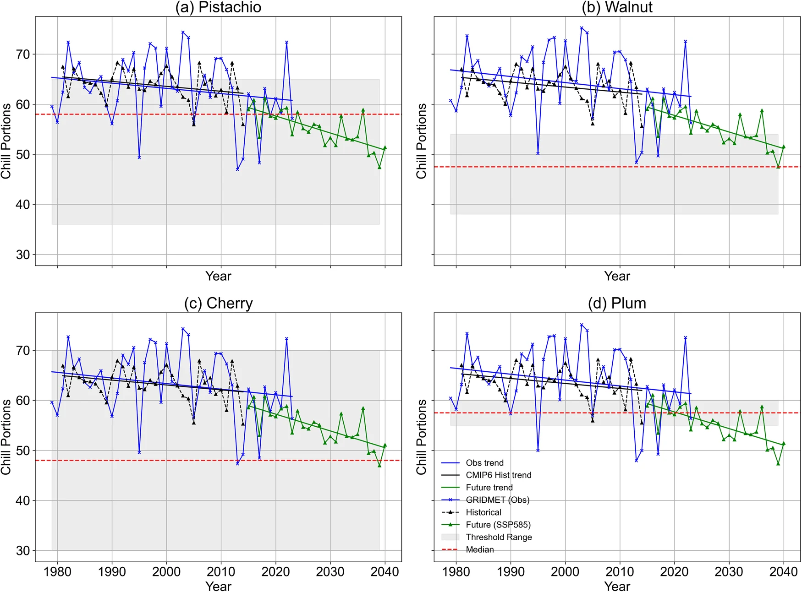
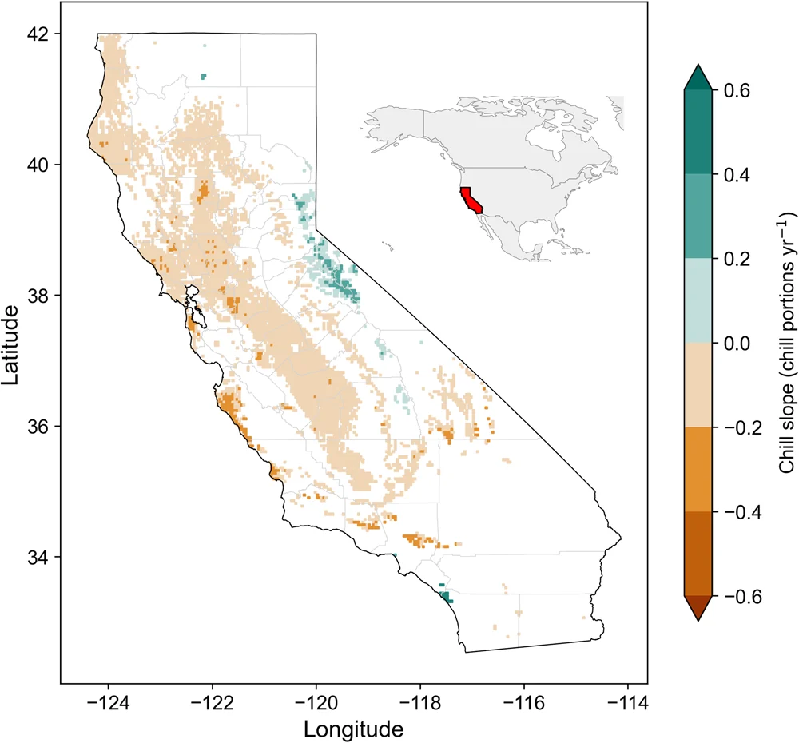
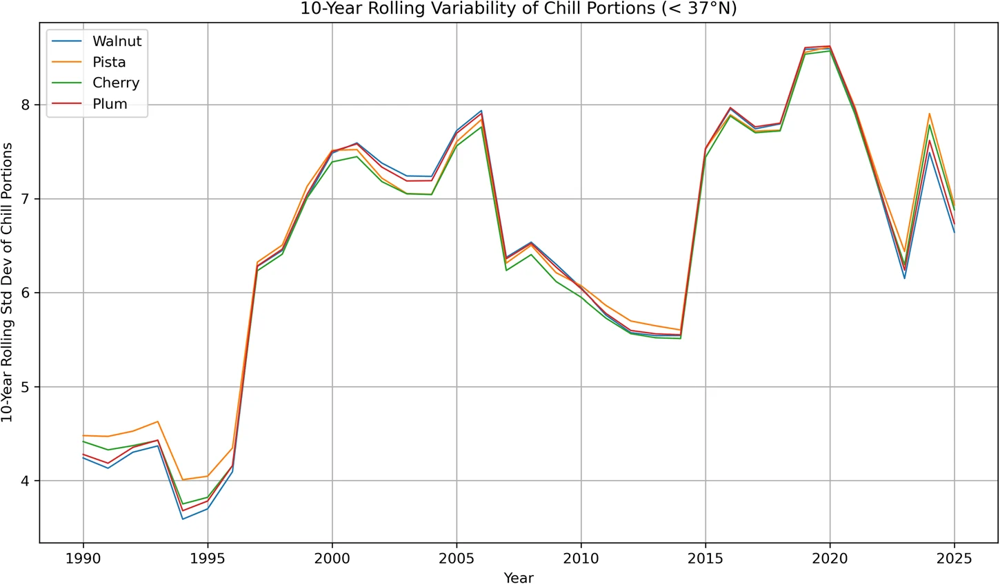
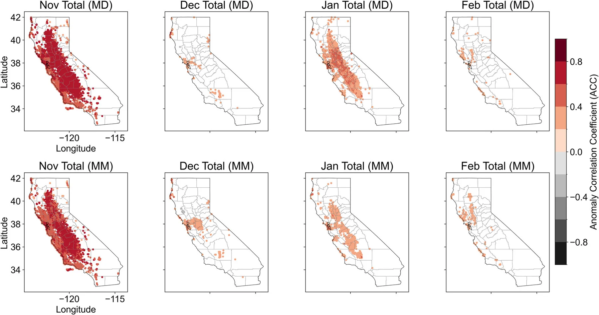

Study 3 of 4 · Impact
From intermittent to persistent chill insufficiency in California's specialty crops
Communications Sustainability 1, 76 (2026) · Open access · doi.org/10.1038/s44458-026-00084-0
Pistachio, walnut, cherry and plum trees need enough winter cold to break dormancy and set fruit. Using 44 years of observations, we find that winter chill in crop regions south of 37°N has already fallen close to crop requirements. What turns that into losses now is rising year-to-year variability, which climate models underestimate by about half. A simple in-season forecast can tell growers by the end of January whether this winter will fall short.
−4 to −6 CP
Drop in mean Nov–Feb chill from 1980–1990 (about 64–65 chill portions) to 2015–2024 (about 60). Over 91% of grid cells in each crop region show a decline.
+56%
Increase in year-to-year variability since the late 1990s: the median 10-year standard deviation rose from 4.3–4.6 to 7.1–7.2 chill portions.
~30% · 25%
Share of the past two decades with insufficient chill in pistachio and plum regions. In 1979–1998 it was 3 and 2 years; in 2004–2023, 6 and 5.
41–42 of 43
Years in which observed chill through January plus a 1-month ECMWF February forecast came within 10% of the season total.
Why it matters
For growers and advisors
- This season
Check chill at the end of January
Dormancy-breaking treatments usually start at least a month before bud break. Observed chill through January plus a February forecast gives a reliable answer in time to decide.
- Risk
Shortfall years are already here
Mean trends alone suggest thresholds will be crossed decades from now. Variability is producing shortfall years today, especially for pistachio and plum.
- Walnut
Low-risk crops are moving closer
Walnut has not dropped below its median requirement, but winters within 5 chill portions of it have tripled since 1998.
Why it matters
For breeding programs and planners
- Breeding
Target about 50 chill portions
New cultivars take 15–20 years to develop. Those started now will reach orchards around 2040–2050, when chill in these regions is projected to average about 50 CP, with more variable winters.
- Projections
Climate models understate near-term risk
CMIP6 historical simulations have about half the observed variability and miss 60–70% of observed shortfall years. Risk assessments built on them start too late.
- Forecasts
Longer leads need new sources of skill
Seasonal forecast skill for chill largely disappears beyond one month, and ENSO is only weakly linked to chill (r of about 0.2). Subseasonal predictors are the gap to close.
Figures
Key results

Figure 2" loading="lazy">
Figure 1" loading="lazy">
Figure 3" loading="lazy">
Figure 4" loading="lazy">What we did
Data and methods
Chill portions were computed with the Dynamic Model (chillR) from hourly temperatures derived from GRIDMET daily maximum and minimum temperature at 4 km. Crop regions come from the 2022 USDA Cropland Data Layer. Trends use Sen's slope with an autocorrelation-adjusted Mann–Kendall test.
Projections use three CMIP6 models that perform well for California (ACCESS-CM2, EC-Earth3, EC-Earth3-Veg), downscaled with LOCA2, under SSP5-8.5 to match earlier chill assessments. ECMWF seasonal hindcasts (1981–2024) were downscaled to 4 km by applying forecast anomalies to the observed climatology with standard-deviation scaling.
Crop thresholds are the median requirement across cultivars: 58 CP for pistachio, 47.5 for walnut, 48 for cherry and 57.5 for plum.
Limits
Read with care
- Median thresholds are regional benchmarks; individual cultivars can need more or less chill.
- The interaction between chilling and spring heat accumulation is not modeled.
- Projections use one high-emissions pathway, chosen to give the earliest plausible timeline.
Cite
Jha, P. K., A, G., Pathak, T. B. & Velicogna, I. (2026). From intermittent to persistent chill insufficiency in California's specialty crops. Communications Sustainability, 1, 76. https://doi.org/10.1038/s44458-026-00084-0